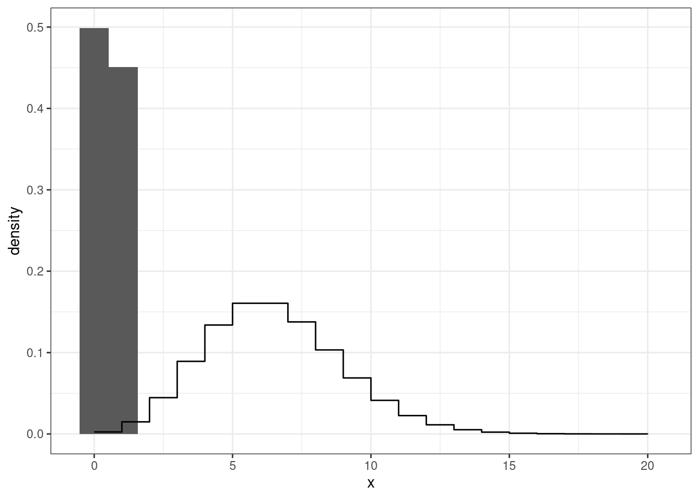
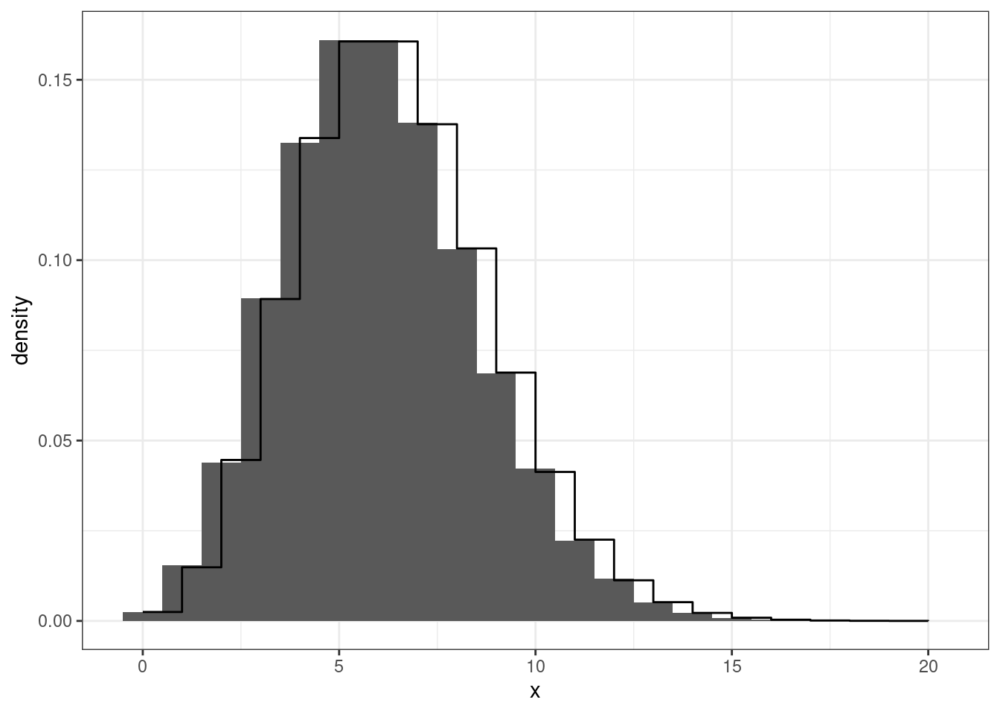

library(tidyverse)
library(patchwork)
theme_set(theme_bw())12 Monte Carlo Methods
12.1 R Setup
12.2 Distributions in R
Several common distributions can be utilized in R with the 4 common functions:
| Letter | Functionality |
|---|---|
d |
returns the height of the probability density/mass function |
p |
returns the cumulative density function value |
q |
returns the inverse cumulative density function (percentiles) |
r |
returns a randomly generated number |
12.3 Random Number Generator
12.4 Generating Random Numbers
A number is an outcome from a random experiment.
Random experiment is an experiment where the outcome is not predicted. The outcomes have a probability of being observed, whether equal or not.
Psuedo Random Numbers
These methods are considered time-consuming when a large number values are necessary.
With the advent of computers, random number can be generated with the use deterministic algorithms, where a mechanism is used to make it random, such as time. Computer-generated random numbers are considered psuedo random numbers because an algorithm is used to generate them given an initial single value, known as a seed.
Supplying a seed to a random number generator will ensure that the same numbers are produced every time.
Mersenne Twister
The Mersenne Twister is a widely used pseudorandom number generator (PRNG) known for its high quality and efficiency. It was developed by Makoto Matsumoto and Takuji Nishimura in 1997.
The default random number generator in R.
12.5 Uniform Distribution R
The runif function in R will generate a value the come from a uniform distribution.
runif arguments:
n: number of values to generatemin: the smallest possible value to generatemax: the largest possible value to generate
Code
runif(1, 0, 1)#> [1] 0.79944812.6 Random Variable Generations
Random Variable Generation
Several distribution, common and uncommon, can be generated using a uniform random variables.
More complex distributions may require the use of common distributions.
Inverse-Transform Method
a <- -20
b <- 4
x <- seq(a, b, length.out = 1000)
pnorm(x, -8, sqrt(10)) |> tibble(x = x, y = _) |>
ggplot(aes(x,y)) +
geom_line() +
theme_bw() +
ggtitle("CDF") +
ylab(paste0("P(X","\u2264"," x)"))Inverse-Transformation Algorithm
- Generate a random value \(U\) that follows a \(U(0,1)\)
- Using the CDF (\(F(X)\)) for random variable \(X\), compute:
\[ X = F^{-1}(U) \]
Exponential Distribution
An exponential random variable is characterized by the exponential distribution, used to model waiting times or the time until an event occurs a certain number of times.
The exponential distribution is a gamma random variable with \(\alpha = 1\).
Exponential Distribution
\[ f(x) = \frac{1}{\lambda} \exp\left\{-\frac{x}{\lambda}\right\} \]
\[ F(x) = 1-\exp\left\{-\frac{x}{\lambda}\right\} \]
\[ F^{-1}(x) = -\lambda \log(1-x) \]
Simulating an Exponential RV
\[ X \sim Exp(2) \]
xe <- seq(0, 4, length.out = 1000)
u <- runif(100000)
u |> tibble(x = _) |>
ggplot(aes(x=u, y = ..density..)) +
geom_histogram() +
geom_line(data = tibble(x = xe, y = dexp(xe, rate = 1/2)),
mapping = aes(x,y)) +
theme_bw()#> Warning: The dot-dot notation (`..density..`) was deprecated in ggplot2 3.4.0.
#> ℹ Please use `after_stat(density)` instead.Simulating an Exponential RV
Code
u <- runif(100000)
x <- -2 * log(1-u)Simulating an Exponential RV
x |> tibble(x = _) |>
ggplot(aes(x=x, y = ..density..)) +
geom_histogram() +
geom_line(data = tibble(x = xe, y = dexp(xe, rate = 1/2)),
mapping = aes(x,y)) +
theme_bw()Exponential RV in R
The exponential distribution can be simulated in R using the rexp function with the following arguments:
n: number of values to generaterate: how fast would events occur
Code
rexp(1, rate = 1)#> [1] 0.2058883Discrete RV Inverse-Transformations
- Generate a random value \(U\) that follows a \(U(0,1)\)
- Using the CDF (\(F(X)\)), find the smallest integer value \(k\) such that:
\[ U \leq F(k) \] 3. \(X \leftarrow k\)
Poisson Distribution
xe <- 0:20
u <- runif(100000)
u |> tibble(x = _) |>
ggplot(aes(x=x, y = ..density..)) +
geom_histogram(bins = 20) +
geom_step(data = tibble(x = xe, y = dpois(xe, lambda = 6)),
mapping = aes(x,y)) +
theme_bw()
Poisson Distribution
Code
finder <- function(u){
x <- 0
condition <- TRUE
while (condition) {
uu <- ppois(x, lambda = 6)
condition <- uu <= u
if(condition){
x <- x + 1
}
}
return(x)
}
xx <- sapply(u, finder)
xx |> tibble(x = _) |>
ggplot(aes(x=x, y = ..density..)) +
geom_histogram(bins = 21) +
geom_step(data = tibble(x = xe, y = dpois(xe, lambda = 6)),
mapping = aes(x,y)) +
theme_bw()
Exponential RV in R
The Poisson distribution can be simulated in R using the rpois function with the following arguments:
n: number of values to generatelambda: the average expected event
Code
rpois(1, lambda = 1)#> [1] 1Normal Distribution
Obtaining the inverse distribution function of a normal distribution requires the use of numeric algorithms.
Therefore it is computationally inefficient to use the inverse-transformation algorithm to generate normal random variables. The Box-Muller algorithm was developed to generate 2 standard normal (\(N(0,1)\)) random variables from uniform random variables.
Normal Distribution
\[ y = \int^x_{-\infty} \frac{1}{\sqrt{2\pi}} \exp\left\{-\frac{z^2}{2}\right\}dz \]
Box-Muller Algorithm
- Generate 2 independent random variables from \(U(0,1)\), \(U_1\) and \(U_2\)
- \(X_1 = (-2 \log(U_1))^{1/2}\cos(2\pi U_2)\)
- \(X_2 = (-2 \log(U_1))^{1/2}\sin(2\pi U_2)\)
Both \(X_1\) and \(X_2\) are independent \(N(0,1)\)
Normal Distribution R
The normal distribution can be simulated in R using the rnorm function with the following arguments:
n: number of values to generatemean: the central tendency (peak)sd: the variation of the data (width)
Code
rnorm(1, mean = 0, sd = 1)#> [1] -1.83868512.7 Accept-Reject Algorithm
The Accept-Reject algorithm allows you to generate noncommon random variable by simulating from a common random variable.
Algorithm Set Up
Let \(X\) be the random variable, that is difficult to generate, you want to generate with a pdf \(f(x)\).
Let \(Y\) be an easily generated random variable with a pdf \(g(y)\). That follows the same support as \(f(x)\)
Lastly, multiply \(g(y)\) with a constant \(c\) such that \(f(y)\leq cg(y)\).
Algorithm
- Generate \(Y\) with a pdf of \(g(y)\)
- Generate \(U\) from \(U(0, cg(y))\)
- Accept-Reject
- Accept: \(U\leq f(y)\); \(Y \rightarrow X\)
- Reject: \(U>f(y)\); repeat the algorithm
Modified Algorithm
- Generate \(Y\) with a pdf of \(g(y)\)
- Generate \(U\) from \(U(0,1)\)
- Accept-Reject
- Accept: \(U\leq f(y)/(cg(y))\); \(Y \rightarrow X\)
- Reject: \(U>f(y)/(cg(y))\); repeat the algorithm
Gamma Random Variable
xe <- seq(0, 20, length.out = 1000)
xe |> tibble(x = _) |>
ggplot(aes(x=x, y = dgamma(x, shape = 2.3, scale = 1.2))) +
geom_line() +
ylab("Density") +
theme_bw()Gamma RV
xe <- seq(0, 20, length.out = 1000)
x <- rexp(100000)
x |> tibble(x = _) |>
ggplot(aes(x=x, y = ..density..)) +
geom_histogram(aes(color = "Exponential")) +
geom_line(data = tibble(x = xe,
y = dgamma(x, shape = 2.3, scale = 1.2)),
aes(x,y, color = "Gamma")) +
ylab("Density") +
theme_bw() +
theme(legend.position = "bottom",
legend.title = element_blank())Gamma RV
xe <- seq(0, 20, length.out = 1000)
xe |> tibble(x = _) |>
ggplot(aes(x=x, y = dgamma(x, shape = 2.3, scale = 1.2))) +
geom_line(aes(color = "Gamma")) +
geom_line(data = tibble(x = xe, y = dexp(xe, 1/3)), aes(x,y, color = "Exponential")) +
ylab("Density") +
theme_bw() +
theme(legend.position = "bottom",
legend.title = element_blank())
Accept-Reject Gamma RV
xe <- seq(0, 20, length.out = 1000)
xe |> tibble(x = _) |>
ggplot(aes(x=x, y = dgamma(x, shape = 2.3, scale = 1.2))) +
geom_line(aes(color = "Gamma")) +
geom_line(data = tibble(x = xe, y = 1.5*dexp(xe, 1/3)), aes(x,y, color = "Exponential")) +
ylab("Density") +
theme_bw() +
theme(legend.position = "bottom",
legend.title = element_blank())Accept-Reject Gamma RV
xe <- seq(0, 20, length.out = 1000)
xe |> tibble(x = _) |>
ggplot(aes(x=x, y = dgamma(x, shape = 2.3, scale = 1.2))) +
geom_line(aes(color = "Gamma")) +
geom_line(data = tibble(x = xe, y = 3*dexp(xe, 1/3)), aes(x,y, color = "Exponential")) +
ylab("Density") +
theme_bw() +
theme(legend.position = "bottom",
legend.title = element_blank())Accept-Reject Gamma RV
Code
x <- c()
n <- 0
while(n < 10000){
e <- rexp(1, 1/2.3)
u <- runif(1)
f <- dgamma(e, 2.3, 1/1.2)
g <- dexp(e, 1/2.3) * 3
if (u < (f/g)){
x <- c(x, e)
n <- length(x)
}
}Gamma RV
x |> tibble(x = _) |>
ggplot(aes(x=x, y = ..density..)) +
geom_histogram(aes(color = "Exponential")) +
geom_line(data = tibble(x = xe,
y = dgamma(x, shape = 2.3, scale = 1.2)),
aes(x,y, color = "Gamma")) +
ylab("Density") +
theme_bw() +
theme(legend.position = "bottom",
legend.title = element_blank())Gamma Distribution R
The gamma distribution can be simulated in R using the rgamma function with the following arguments:
n: number of values to generateshape: describes the shape of distribution (\(\alpha\))scale: the spread of the data (\(\beta\))
Code
rgamma(1, shape = 1.2, rate = .5)#> [1] 5.052431Beta RV in R
The beta distribution can be simulated in R using the rbeta function with the following arguments:
n: number of values to generateshape1: controls the shape of distributionshape2: controls the shape of distribution
Code
rbeta(1, shape1 = 1.2, shape2 = 6.5)#> [1] 0.05846545Bernoulli RV in R
The bernoulli distribution can be simulated in R using the rbinom function with the following arguments:
n: number of values to generatesize = 1: will give a bernoulli distributionprob: probability of observing 1 (success)
Code
rbinom(1, prob = .2, size = 1)#> [1] 0Binomial RV in R
The binomial distribution can be simulated in R using the rbinom function with the following arguments:
n: number of values to generatesize: how many bernoulli trials to conductprob: probability of observing 1 (success)
Code
rbinom(1, prob = .5, size = 25)#> [1] 11Negative Binomial RV in R
The negative binomial distribution can be simulated in R using the rnbinom function with the following arguments:
n: number of values to generatesize: number of successful trialsprob: probability of observing 1 (success)
Code
rnbinom(1, prob = .6, size = 5)#> [1] 012.8 Transformation Methods
\(N(0,1)\)
\[ X \sim N(\mu, \sigma^2) \]
\[ Z = \frac{X-\mu}{\sigma} \sim N(0,1) \]
\(N(\mu, \sigma^2)\)
\[ Z \sim N(0,1) \]
\[ X = Z\sigma + \mu \sim N(\mu, \sigma^2) \]
\(\chi^2(1)\)
\[ Z \sim N(0,1) \]
\[ Z^2 \sim \chi^2(1) \]
\(F(m,n)\)
\[ U \sim \chi^2(m) \]
\[ V \sim \chi^2(n) \]
\[ F = \frac{U/m}{V/n} \sim F(m,n) \]
\(t(n)\)
\[ Z \sim N(0,1) \]
\[ U \sim \chi^2(m) \]
\[ T = \frac{Z}{\sqrt{U/m}} \sim t(n) \]
\(Beta(\alpha, \beta)\)
\[ U \sim Gamma(\alpha,\lambda) \]
\[ V \sim Gamma(\beta,\lambda) \]
\[ X = \frac{U}{U+V} \sim Beta(\alpha,\beta) \]
12.9 Monte Carlo Integration
Monte Carlo Integration is a numerical technique to compute a numerical of an integral.
It relies on simulating from a know distribution to obtain the expected value of a desired function.
Integration
Integration is commonly used to find the area under a curve.
Expectation
Let \(X\) be a continuous random variable:
\[ E(X) = \int_{X}xf(x)dx \]
\[ E\{g(X)\} = \int_Xg(x)f(x)dx \]
Strong Law of Large Numbers
As \(n\rightarrow \infty\) (ie simulate a large number of random variables):
\[ \bar X_n \rightarrow E_f(X) \]
where
\[ \bar X_n \rightarrow = \frac{1}{n}\sum^n_{i=1}X_i \]
Strong Law of Large Numbers
\[ \bar X_n^{(g)} \rightarrow E_f\{g(X)\} \]
where
\[ \bar X_n^{(g)} \rightarrow = \frac{1}{n}\sum^n_{i=1}g(X_i) \]
The Expected Value of a Normal Distribution
\[ E(X) = \int^{\infty}_{-\infty}\frac{x}{\sqrt{2\pi\sigma^2}} \exp\left\{-\frac{(x-\mu)^2}{\sigma^2}\right\} dx = \mu \]
Variance of a Normal Distribution
\[ Var(X) = E[\{X-E(X)\}^2] \\= \int^{\infty}_{-\infty}\frac{\{x-E(X)\}^2}{\sqrt{2\pi\sigma^2}} \exp\left\{-\frac{(x-\mu)^2}{\sigma^2}\right\} dx = \sigma^2 \]
Using Monte Carlo Integration to obtain expectations
- Simulate from a target distribution \(f\)
- Calculate the mean for the expected value
Using Monte Carlo Integration
\[ X \sim N(\mu, \sigma^2) \]
x <- rnorm(100000, mean = -2, sd = 3)
mean(x)#> [1] -1.998384var(x)#> [1] 8.978187Gamma Distrbution
\[ X \sim Gamma(3,4) \]
Beta Distribution
\[ X \sim Beta(2,3) \]
\(\chi^2(p)\)
\[ X \sim \chi^2(39) \]
Finding the Probability
Integration is commonly used to determine the probability of observing a certain range of values for a continuous random variable.
\[ P(a < X < b) \]
Graphical Setting
x <- seq(-4, 4, length.out = 1000)
dt_two<-function(x){
y <- dnorm(x)
y[x< -1 | x>2] <-NA
return(y)
}
x |> (\(.) tibble(x = ., y = dnorm(.)))() |>
ggplot(aes(x, y)) +
geom_line() +
stat_function(fun = dt_two, geom = "area", fill = "green") +
theme_bw()Finding the Propbabilities of a Random Variable
For a given random variable \(X\), finding the probability is the same as
\[ E\{I(a<X<b)\} = \int_X I(a<X<b) f(x) dx \]
where \(I(a<X<b)\) is the indicator function.
Indicator Function
\[ I(a<X<b) = \left\{\begin{array}{cc} 1 & a<X<b\\ 0 & \mathrm{otherwise} \end{array} \right. \]
Finding the Probability
\[ \begin{align} E\{I(a<X<b)\} & = \int_X I(a<X<b) f(x) dx\\ & = \int_a^b f(x) dx\\ & = P(a < X < b) \end{align} \]
Monte Carlo Probability
- Simulate from a target distribution \(f\)
- Calculate the mean for \(I(a<X<b)\)
Normal RV Example
Let \(X\sim N(4, 2)\), find \(P(3 < X < 6)\)
Code
pnorm(6, 4, sqrt(2)) - pnorm(3, 4, sqrt(2))#> [1] 0.6816003Using Monte Carlo Methods
Code
x <- rnorm(1000000, 4, sqrt(2))
mean((x > 3 & x < 6))#> [1] 0.682103Logistic RV Example
Let \(X\sim Logistic(3, 5)\), find \(P(-1 < X < 5)\)
Weibull RV Example
Let \(X\sim Weibull(1, 1)\), find \(P(2 < X < 5.5)\)
F RV Example
Let \(X\sim F(2, 45)\), find \(P(1 < X < 3)\)
Monte Carlo Integration
Monte Carlo Integration can be used to evaluate finite-bounded integrals of the following form:
\[ \int^b_a g(x) dx \] such that \(-\infty <a,b<\infty\).
Monte Carlo Example Integration
\[ \int^1_{0} \{\cos(50x) - sin(20x)\}^2dx \]
12.10 Monte Carlo Example Integration
13
Let \(X \sim U(0,1)\) with \(f(x) = 1\), then
\[ E[\{\cos(50x) - sin(20x)\}^2] =\int^1_{0} \{\cos(50x) - sin(20x)\}^2dx \]
Using Numerical Integration
Code
ff <- function(x){
(cos(50*x)-sin(50*x))^2
}
integrate(ff,0,1)#> 0.9986232 with absolute error < 9.5e-11Monte Carlo Example Integration
Code
x <- runif(10000000, 0, 1)
mean((cos(50*x)-sin(50*x))^2)#> [1] 0.9987775Monte Carlo Example Integration
\[ \int^{15}_{10} \{\cos(50x) - sin(20x)\}^2dx \]
Monte Carlo Integration
Let \(X \sim U(10,15)\) with \(f(x) = 1\), then
\[ E[\{\cos(50x) - sin(20x)\}^2] = \\ \int^{15}_{10} \frac{1}{5} \{\cos(50x) - sin(20x)\}^2dx \]
Monte Carlo Example Integration
\[ \int^{15}_{10} \{\cos(50x) - sin(20x)\}^2dx = \\ 5 * E[\{\cos(50x) - sin(20x)\}^2] \]
Monte Carlo Example Integration
Code
ff <- function(x){
(cos(50*x)-sin(50*x))^2
}
integrate(ff,10,15)#> 4.993274 with absolute error < 1.1e-06Monte Carlo Example Integration
Code
x <- runif(10000000, 10, 15)
mean(ff(x)) * 5#> [1] 4.99344Monte Carlo Integration Algorithm
Given: \[ \int_a^b g(x) dx \]
- Simulate \(n\) value from \(X \sim U(a,b)\)
- Take the average, \(\frac{1}{n}\sum^{n}_{i=1}g(x_i)\)
- Multiply the average by \(b-a\): \(\frac{b-a}{n}\sum^{n}_{i=1}g(x_i)\)
MC Examples
\[ \int_0^{2} e^{-x^2/2} dx \]
13.1 Importance Sampling
Importance sampling is an extension of Monte Carlo integration where it addresses the limitations of large variance of the expected value and the bounds required in integrals.
This is done by simulating from a random variable that has an infinite support system.
Let’s say we are interested in finding the numerical value of the following integral:
\[ \int_{-\infty}^\infty g(x) dx \]
If we view the integral as an expectation of an easily simulated random variable, we can compute the numerical value.
Let \(X\) be a random variable \(f\), then
\[ \int_{-\infty}^\infty g(x) dx = \int_{-\infty}^\infty \frac{g(x)}{f(x)} f(x) dx = E\left\{\frac{g(x)}{f(x)}\right\} \]
Since the integral is the expectation of \(X\), it can be obtained by taking the mean of the simulated values applied to \(g(x)/f(x)\).
Example
\[ \int_{-\infty}^{\infty} e^{-x^2/2} dx \]
Example
x <- rt(1000000, df = 1)
f2 <- function(x){
exp(-x^2/2) / dt(x, 1)
}
mean(f2(x))#> [1] 2.505959sqrt(2*pi)#> [1] 2.506628Choosing \(f(x)\)
Choose a value \(f(x)\) that follows a shape close enough to \(g(x)\) that has the same bounds as the integral.